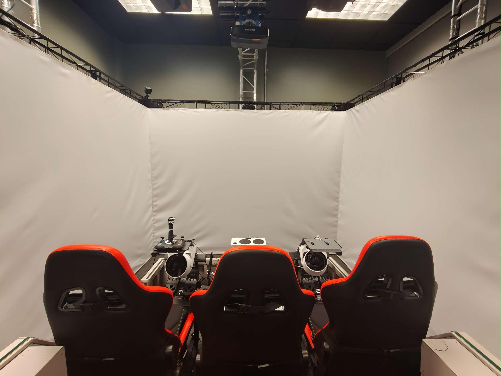
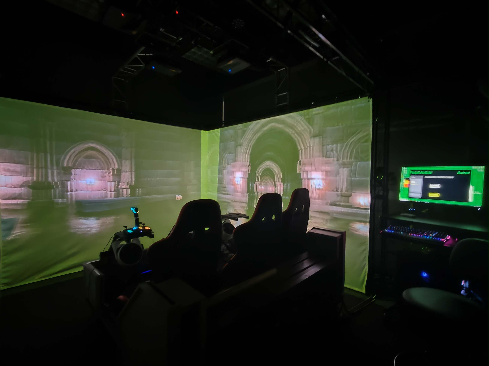
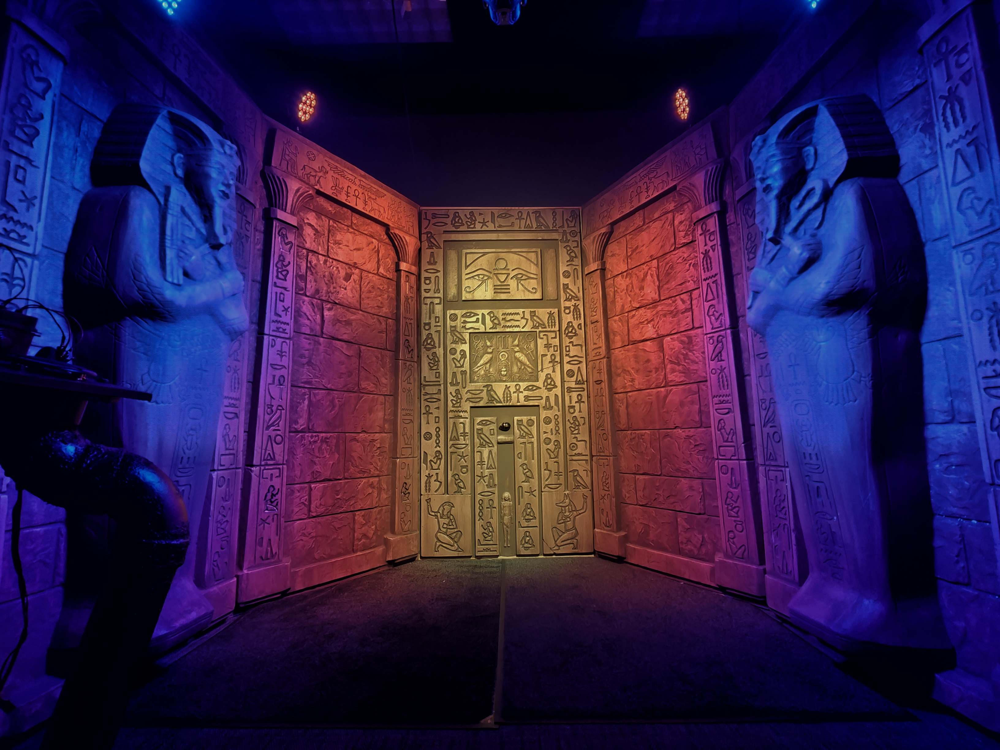

Projects from Experience Design (CMU ETC53613) taught by Ruth Comley.
Includes projection mapping, binaural audio recording, artistic DMX lighting, a dark ride, and an
escape room.
SOFTWARE AND SKILLSUnity, HeavyM, Adobe After Effects, DMX show
controls
TIMELINEFall 2025
Escape Room
A narrative-driven escape room using an Egyptian tomb set with sensors embedded on the floors
and walls,
and DMX lighting set up in the space. We were tasked with utilising the kiosk and the tomb
to create an
immersive escape room experience.
Showcased at the 2025 CMU ETC Fall Festival.
Space Provided
Tomb (left) and kiosk (right) sets provided for us to work with.
Experience Journey
Trapped in an Ancient Egyptian Tomb, you must solve the puzzles of the curse in order to
escape. The lights
dim
throughout and when they go out it means the mummies will wake up to drive you mad for
interrupting their
eternal
rest.
Final Experience
Dark Ride Design
We were tasked with playtesting an existing Unity-based dark ride design project to find out
why the experience was not intuitive and how to make it more engaging. We then modified the
experience to be showcased at the 2025 CMU ETC Fall Festival.
Space Provided


CAVE with moving floors and three 3D projection walls.
Experience Journey
You're a rookie ghostbuster, tasked with finding five glowing orbs hidden throughout a
haunted manor and releasing ghosts trapped in each zone by solving a cooperative puzzle.
Final Experience
Video to be updated this week!
Artistic Lighting
An audio-visual narrative experience intended to entertain guests with the story of a tomb
raider being judged after death using an Egyptian tomb set and DMX lighting set up in the
space.
Showcased at the 2025 CMU ETC Fall Festival.
Space Provided

Tomb set provided for us to work with.
Experience Journey
The story chosen for the project was centered around the Egyptian myth of Anubis, who
weighs the hearts of the deceased against the feather of Ma'at (truth and justice) to
determine their fate in the afterlife. This story reflects the importance of morality in
ancient Egyptian culture. We put our own spin on it by incorporating the mummy statues,
the eye, and a Tomb Raider character, which align with the physical set that were
provided with in The Tomb.
Final Experience
Projection Mapping
Initial project from Experience Design (CMU ETC53613) taught by Ruth Comley. Additional
project created for Ruth's
theatre company Stage and Steel Productions, and personal projects.
Miniature Coffin Set Projection Mapping
First ever projection mapping project, a little eccentric and unconventional. We were tasked
with creating
an experience on a miniature graveyard diorama in a coffin, using ChromaDepth technology.
ChromaDepth is a 3D imaging technology that uses special, patented, prismatic glasses to make
2D images
appear in 3D by separating colors based on their wavelengths. Warm colors (red, orange,
yellow) appear in
the foreground, while cool colors (blue, green) recede into the background. This effect is
commonly used in
haunted houses.
Setup
ChromaDepth Asset Created - Wall Crumbling
Created using Adobe After Effects.
The warm colors (red, orange, yellow) appear in the foreground, while
cool colors
(blue, green) recede into the background. The wall looks like it's breaking outwards, with the
red pieces
falling out of it, leaving behind the blue background.
Final Experience
HeavyM screen recording.
Halloween Theatre Projection Mapping
Impromptu project working with our advisor Ruth Comley's theatre company, Stage and Steel
Productions'
annual Halloween festival.
We mapped the space and each created our own experience in a short afternoon. Mine was
envisioned
to be
eerie.
Space - Before
Mapping
Complete Experience
Binaural Audio
A gripping binaural audio immersive experience where you find yourself the accomplice to a
murder, all
while two overly curious cops happen to be lingering too close for comfort.
Final Experience
Binaural audio recording. Best experienced with headphones.